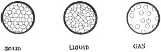

Maddenin üç hâli (katı, sıvı ve gaz), söz konusu maddenin hacmi ve şekli tarafından tanımlanır. Katılar, sonlu bir hacme ve şekle sahiplerdir. Sıvılar, sonlu bir hacme sahiptir, ama şekilleri onları tutan şey tarafından belirlenir. Gazların belirli bir şekilleri veya hacimleri yoktur ve onları barından hiçbir şey yoksa sonsuza dek genişlerler.

Madde, moleküllerden ve moleküller ise atomlardan yapılır. Maddenin hâlini belirleyen şey atomların ve moleküllerin doğasıdır. Tüm moleküllerin kinetik enerjisi vardır; hareket ederler. Daha çok hareket ettikçe, birbirinden ayrı hareket etmeleri ihtimali daha da artar. Ama moleküller, özellikle aynı tip moleküller, birbirlerini çekmeye eğilimlilerdir. Kinetik enerji ve moleküler çekim arasındaki gerilim, maddenin farklı fazları ile sonuçlanır. Bu gerilim, sıcaklık ve basınçtan büyük ölçüde etkilenir. Sıcaklıktaki artışlar, kinetik enerjiyi yükselterek molekülleri daha hızlı hareket ettirirken basınçtaki artışlar, moleküler çekimleri yükselterek molekülleri birbirine yaklaştırır.
Katılarda moleküller, titreşerek veya dönerek daha yavaş hareket ederler ve moleküller arasındaki çekim çok kuvvetlidir. Buz gibi şekilsiz yapılar veya kristaller denen katı yapılarda kendilerini düzenlerler. Sıcaklık ve basınca bağlı olarak, molekülün aynı tipi pek çok farklı yapılarda düzenlenebilir. Örneğin, katı karbon grafit veya elmas oluşturabilir. Farklı yapılara ‘faz’ denir.
Sıvılarda kinetik enerji, yeteri kadar yüksektir ve moleküler çekim de yeterince düşüktür; böylelikle moleküller kolaylıkla kayabilir. Çoğu maddenin sadece bir sıvı fazı vardır, ama diğer maddelerin birden fazla fazı vardır. Örneğin sıvı helyumun iki fazı vardır. Gazlarda moleküller, çok nadiren birbirine çekilirler ve serbestçe hareket ederler. Moleküller yeterli kinetik enerji kazanırlarsa ve neredeyse hiç basınçları yoksa, elektronları (minik negatif yüklü atomaltı parçacıklar) atomlarının geri kalanından kendilerini ayırırlar. Plazma denen bu faz, yıldızlarda oluşur.
EK BİLGİLER:
1. Buz (katı su), sekiz farklı faza sahiptir.
2. Sıvı helyumun bir fazı, aşırı derecede tuhaftır. Kapalı bir kaba doldurulduğunda, en alta yerleşir; içinde sürünür, kenarına sürünür ve sonra dışına sürünür.
3. Aşırı derecede düşük sıcaklıkta moleküller nadiren hareket ederler. Bu, süperakışkanlar, süperkatılar ve Bose-Einstein yoğuşmaları denen, maddenin tuhaf hâllerine izin verir.